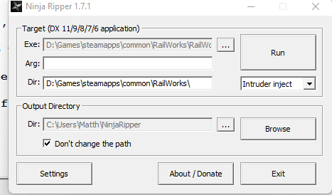
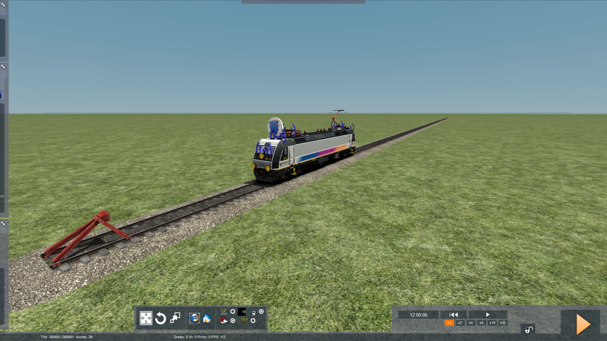
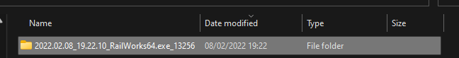
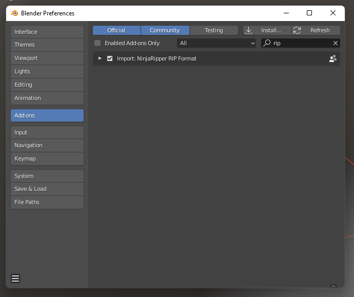
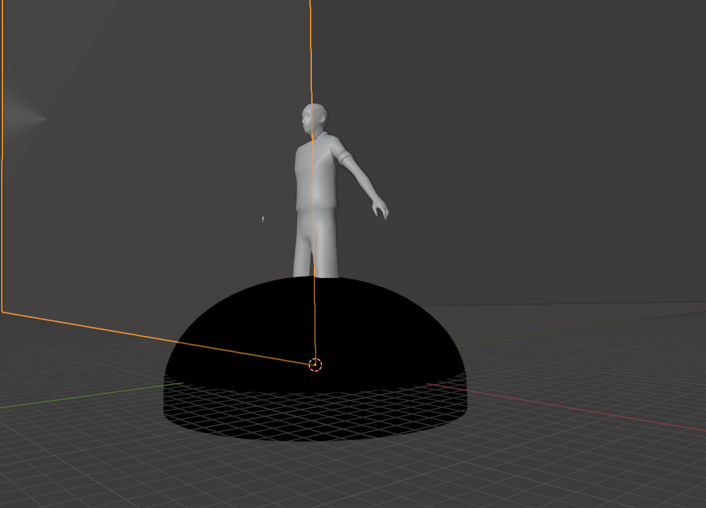
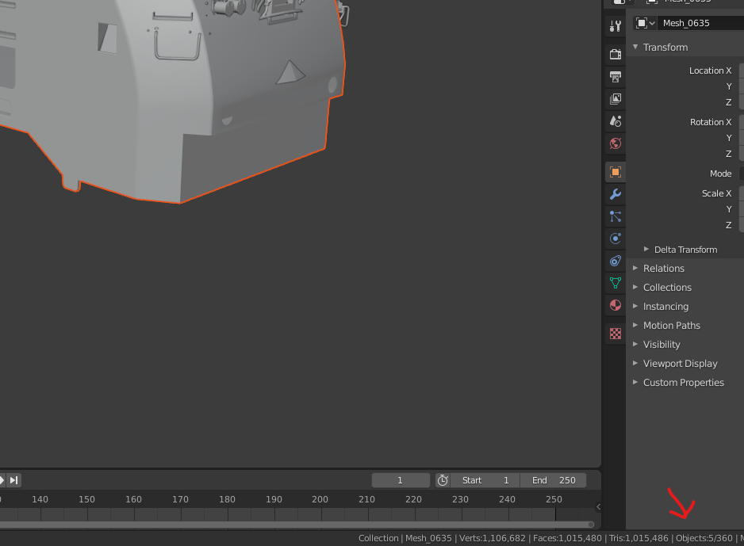

Getting Started
- Train Simulator
- Transport Fever 2
- Blender 2.8
- Ninja Ripper
- Rip Import
- GIMP (Not Required, Photoshop can be used as an alternative)
- Notepad++ (Not Required, Notepad can be used as an alternative)
- TS-Tools (Not Required, Only use if you need to extract extra textures not included on the model)
- WinRAR (Required, Alternatives can be used)
- %APPDATA%/Transport Fever 2/ for Windows
- ~/.local/share/Transport Fever 2 for Linux
- /Users/
/Library/Application Support/Transport Fever 2/ for MacOS (Steam/GOG) - /Users/
/Library/Containers/com.gambitious.transportfever2/Data/Library/Application Support/Transport Fever 2/ for MacOS (App Store)
Welcome
Hello, this is my guide on how to port Train Simulator models into Transport Fever 2. This process is long and does involve alot of trial and error. I would heavily reccommend being profiecent in the tools required to do this process such as, Blender, LUA, and the Transport Fever 2 Model Editor. Should you not be profiecent in these tools I will attempt to do my best to explain, but their are resources on these tools at, TPF2 Wiki, and Transport Fever net. Not to mention the countless discord servers as well.
Important Notices
This guide is purely educational, the contents of this guide should not be used for commerical purposes without the explict permission from the original TS model creator. This guide is also not responsable for your actions if shared, fair use is only applicable given the scenario if only for personal use. While this guide can be used to create shared models of copyrighted material in it of its self is not shared, and a third party must be used in order for the spread of copyrighted material to occur.
Prerequisites
Setting up the Transport Fever 2 Model Editor
In order to use the model editor it must first be told the directories of folders in a file you will create
First create a file titled "model_editor_settings.lua" in
With the contents of
function data()
return {
importFbxPath = "C:/Users/YourAccountNameHere/AppData/Roaming/Transport Fever 2/fbx_import/",
installPath = "",
userDataPath = "D:/Steam/userdata/YourSteamIDHere/1066780/local/",
}
end
You are now able to launch the Model Editor when needed
Setting up Ninja Ripper
Using the link provided above, you will be greated with a 7z file open this in WinRAR and Extract.
Open the folder approprite to your sytem type x64 (64 Bit OS) x86 (32 Bit OS) and launch NinjaRipper.exe
With NinjaRipper now open select the .exe to launch TS in the railworks folder of your steam libary.
Change the output directory if neccesary, then click run
Ripping the Model from TS
The Proccess of Ripping
I would heavily reccommend using the build tool within Train Simulator because when using NinjaRipper you cannot select just the meshes you want. This results in some things such as grass, tracks, and skybox getting in when not needed using a regular map would only make this issue worse.
Start on an Empty map, and create a straight piece of track with the train/car (with driver) of your desire on, and press play and take control of the train
Once in control of the train, go to external view and hide all UI elements. Once done press F10, your game may freeze for a moment wait until you regrain control
Now check "C:\Users\YourAccountNameHere\NinjaRipper\_NinjaRipper" and make sure you have a folder from the latest date
You may now close TS, you have successfully ripped to model into a useable state for blender
Importing & Editing the Model in Blender
Importing the Model into Blender
Open up the folder NinjaRipper had created, and open Blender. Within Blender open settings by going into Edit in the top left then Prefrences. With Prefrences open click on Add-ons then install. Select the folder from the Rip Import Git-Hub page. Once done click the box next to "Import: NinjaRipper RIP Format" and close prefrences.
Now go to File in the top left click import then NinjaRipper. Copy the Directory from file explorer to Blender, click on one of the files. On the right select Import entire folder then select import at the bottom. Blender will freeze while it loads in the meshes.
Cleaning up the Cluster Fuck
When you import the model you will notice a cluster fuck of meshes. Most of these are unimportant and unneeded.
It's important to rely on your judgement for this part just note some objects get centered ie they are at 0,0,0. Things like cabs, bogies, and other wonders that are important to the model can end up here. Also, make sure nothing is in the distance these meshes are guarenteed to not be part of the train itself and will cause issues later on if not dealt with. Each model is different, but delete anything that looks like it doesn't belong. Another thing to note is that the import creates multiple of one mesh inside of each other, how I deal with this going one by one and deleting the excess and once done moving it 5 meters along the axis so it doesn't interfere with other meshes.
One of these maybe another type of map (metal, gloss, ect.) and appear all white, this one is also important to delete along with it's accosiated material. When completed the cleanup process your model should look like this